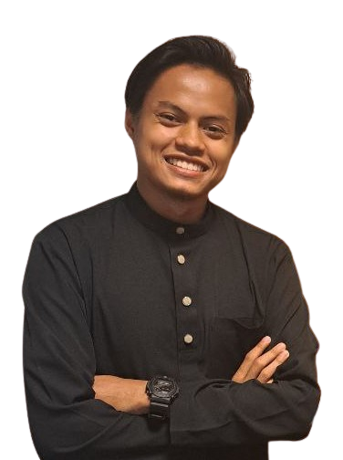

Resume
Syahmi Asyraf bin Md Silan
2023
Bachelor of Petroleum Engineering
About Me

As a recent Petroleum Engineer graduate from Universiti Teknologi Malaysia, I am enthusiastic about leveraging my strong analytical skills and passion for Oil and Gas industry to contribute to a dynamic team. Through hands-on projects and internships, I've honed my technical and software proficiency abilities, and I'm excited to apply my knowledge to drive innovative solutions. With a commitment to continuous learning and a drive for excellence, I am eager to take on new challenges and make a positive impact in the Oil and Gas industry. Outside of my educational background, I am an active learner of new skills such as web programming and intend to supplement my income by freelancing.
Reservoir Engineering | Drilling and Well Completion | Production Engineering | Petroleum Economics
Petrel | PI Processbook | PVTP | Prosper | QUE$TOR
Resume
Email Me
Education Background
Universiti Teknologi Malaysia
2019 - 2023
Completed a Bachelor of Engineering in Petroleum Engineering from UTM, graduating in 2023. Developed proficiency in technical and software proficiency skills and honed my analytical and problem-solving abilities. Earned Dean List for a few semesters for academic excellence and gained practical experience through an internship at SapuraOMV Upstream (Sarawak) Inc. Earned Best Bureau and Principal Choice Award for leadership and dedication under college resident representative.
Perak Matriculation College
2018 - 2019
During my time at KMpK for one year, I pursued a rigorous academic path focused on Pure Science (Module I). Engaging in various extracurricular activites, such as Petanque Club, allowed me to develop leadership skills and connect with like-minded peers. Through meaningful projects like English Community Service, i contribute to the college community and honed my teamwork and problem-solving abilities.
SM Sains Raja Tun Azlan Shah
2013 - 2017
Graduated from SERATAS in 2017 with a moderate academic record and a passion for science. Earned the Full Colours Co-curriculum Award for exceptional leadership and dedication. Actively participated in Stduent Leadership Body and Cricket Club and developed strong teamwork and communication skills.
Work Experience
- Production Operation Trainee (Operational Readiness & Assurance)
2022
I completed a dynamic 3-month internship, exposing myself to industrial projects and the environment as Production Operation Trainee (Operational Readiness & Assurance). My experience underscores my adaptability, teamwork, and commitment to delivering valuable results in a professional environment.
See how my experience is going during the internship.


Project and Involvement
- Bachelor of Engineering (Petroleum)
2019 - 2023
I spearheaded an impactful undergraduate research projects, delivering creative solutions that reflect my analytical skills. Additionally, I showcased my research by competing in Paper Poster Competition, obtaining industrial expert input, and solidifying my projects.
Here are several projects and involvement I have participated in.


Organizational Experience
- Jawatankuasa Kolej Mahasiswa Kolej Tun Hussein Onn (JKM KTHO)
2020 - 2022
My appointment as the Head of the Welfare and Community Bureau marked a pivotal moment. I was responsible for nurturing resident well-being and forging unity within our college. Through strategic planning and volunteering engagement, I led transformative initiatives that left an enduring positive impact on our community.
- Society of Petroleum Engineering Universiti Teknologi Malaysia Student Chapter (SPE-UTM SC)
2019 - 2023
Becoming a member of the Society of Petroleum Engineering Student Chapter marked a significant step in my academic journey, granting me access to a dynamic platform where I could deepen my knowledge of the petroleum industry and collaborate with like-minded peers. Through active participation and engagement, I contributed to a vibrant community dedicated to fostering innovation and excellence in the field.
Let's get to know some of what I've been involved with.


Technical Skills
Technical Skills
- Pi System
- Field Development Plan
- Independent Research
- Program Planning and Implementation
- Data Analytic